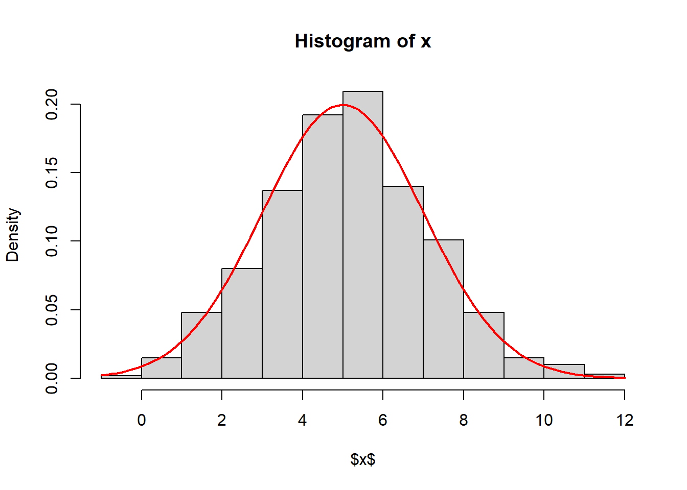
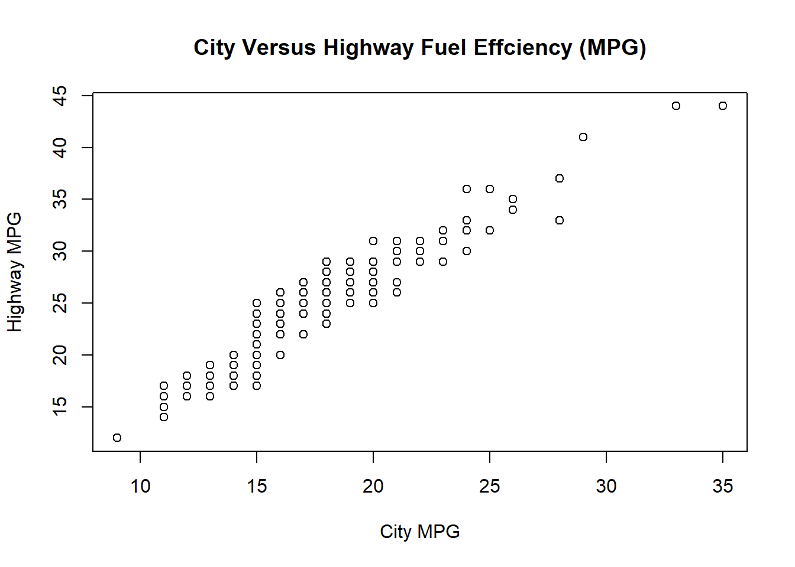

n <- 1000ECON-3201 - Assignment 1
1. Git and GitHub
URL to my assignment’s directory on GitHub: https://github.com/minhclone4641/econ_3201.
2. Latex
Rewrite mentioned equations in Latex
(a) \(E(Y) = y_1p_1 + ... + y_kp_k = \sum_{i=1}^ky_ip_i\).
(b) \(\sigma_Y = Var(Y) = E[(Y - \mu_y)^2] = \sum_{i=1}^k(y_i-\mu_y)^2p_i\)
(c) \(\hat{\beta} = \frac{\sum_{i=1}^n(y-y_i)(x-x_i)}{\sum_{i=1}^n(x-x_i)^2}\)
(d) \(P(a \leq Y \leq b) = \int_{a}^{b}f_Y(y)dy\)
(e) \(\hat{g}(x) = \frac {\frac{1}{nh}\sum_{i=1}^n y_ik(\frac{x_i-x}{h})} {\frac{1}{nh}\sum_{i=1}^n k(\frac{x_i-x}{h})}\)
3. R
3.1 Assignment
(a) Set the sample size
(b) Generate 2 random variables \(u_1\) and \(u_2\) With n/2 = 500 observations, ~U(0,1)
u1 <- runif(n/2,0,1)
u2 <- runif(n/2,0,1)(c) Generate z1 and z2
z1 <- sqrt(-2*log(u1))*cos(2*pi*u2)
z2 <- sqrt(-2*log(u1))*sin(2*pi*u2)(d) Generate a vector z =[z1,z2]
z <- c(z1,z2)(e) Generate two variables \(\mu\) and \(\sigma\). set \(\mu = 5\) and \(\sigma =2\)
mu <- 5
sigma <- 2(f) Generate a varieble \(x = \mu + \sigma x z\)
x <- mu + sigma * z(g) Calculate the mean and standard deviation of x
mean(x)[1] 5.11893sd(x)[1] 1.998449(h) Plot a histogram of ùë• with the normal distribution curve
hist(x,
freq = FALSE,
ylab = "Density",
xlab = "$x$")
curve(dnorm(x, mean = mu, sd = sigma),
col = "red", lwd = 2, add = TRUE)
3.2 Data frames and Indexing
Load data set df from “hlthexp.csv” and adjust to match “table 1” in PDF
cihi <- read.csv("hlthexp.csv")
df <- data.frame(Year = cihi$Year,
Hospitals = cihi$Hospitals,
Physicians = cihi$Physicians,
"Other Services" = cihi$Other.Institutions,
Dental = cihi$Other.Professionals..Dental.Services,
Vision = cihi$Other.Professionals..Vision.Care.Services,
"Other Professionals" = cihi$Other.Professionals..Other.Services,
check.names = FALSE)(a) Determine if there are any missing values for the variable Hospitals
any(is.na(df$Hospitals))[1] FALSEsum(is.na(df$Hospitals))[1] 0(b) Add a variable called “Total Other Services” to the data frame df
df$'Total Other Services' <- df$Dental + df$Vision + df$"Other Professional"
head(df) Year Hospitals Physicians Other Services Dental Vision Other Professionals
1 1975 5136.77 1813.15 796.62 56.40 35.86 46.72
2 1976 5977.68 2041.52 999.08 69.81 40.65 53.92
3 1977 6372.73 2252.12 1175.16 83.70 44.86 60.54
4 1978 6861.92 2528.34 1367.51 103.96 51.91 75.52
5 1979 7487.62 2804.48 1581.37 143.83 57.99 88.88
6 1980 8585.16 3235.98 1821.48 194.94 67.23 104.90
Total Other Services
1 138.98
2 164.38
3 189.10
4 231.39
5 290.70
6 367.07(c)
(d) Add the variable “Prescription Drugs” to the df data frame using the append method
df <- data.frame(df,
'Prescription Drugs' = cihi$Prescribed.Drug,
check.names = FALSE)
head(df) Year Hospitals Physicians Other Services Dental Vision Other Professionals
1 1975 5136.77 1813.15 796.62 56.40 35.86 46.72
2 1976 5977.68 2041.52 999.08 69.81 40.65 53.92
3 1977 6372.73 2252.12 1175.16 83.70 44.86 60.54
4 1978 6861.92 2528.34 1367.51 103.96 51.91 75.52
5 1979 7487.62 2804.48 1581.37 143.83 57.99 88.88
6 1980 8585.16 3235.98 1821.48 194.94 67.23 104.90
Total Other Services Prescription Drugs
1 138.98 158.56
2 164.38 215.84
3 189.10 266.56
4 231.39 327.94
5 290.70 386.41
6 367.07 465.01(e) Using a single R command, determine the expenditure on hospitals in 1983
df$Hospitals[df$Year == 1983][1] 13174.55(f) Using a singe R command, list the expenditures by year for 2012-2022.
subset(df,
df$Year >= 2012 & df$Year <= 2022) Year Hospitals Physicians Other Services Dental Vision Other Professionals
38 2012 53299.96 29801.63 15923.80 759.13 353.62 782.67
39 2013 54954.28 31202.28 16386.15 762.36 358.08 730.08
40 2014 56123.22 32490.79 16966.03 782.00 389.71 685.88
41 2015 57352.33 33886.08 18313.73 821.42 430.46 1179.18
42 2016 58168.97 35283.98 18809.91 875.86 461.42 1355.90
43 2017 60356.12 36490.87 19665.65 918.62 484.33 1491.51
44 2018 62896.86 37494.64 20548.31 961.17 517.89 1614.12
45 2019 65034.33 38914.04 21446.58 1018.36 557.19 1729.01
46 2020 67221.53 37288.46 23675.08 896.76 513.22 1711.94
47 2021 69663.71 41479.50 25678.66 922.86 559.07 1906.92
48 2022 73778.17 44195.30 28095.86 991.82 584.06 2047.50
Total Other Services Prescription Drugs
38 1895.42 12114.49
39 1850.52 12199.19
40 1857.59 12668.45
41 2431.06 13298.98
42 2693.18 13616.80
43 2894.46 13957.25
44 3093.18 14442.70
45 3304.56 14939.93
46 3121.92 15435.35
47 3388.85 16034.55
48 3623.38 17094.523.3. Other useful R commands.
Load the mpg dataset from the ggplot2 package
mpg <-ggplot2::mpg(a) Subset the data to include only observations from 2008.
subset(mpg, year == 2008) manufacturer model displ year cyl trans drv cty hwy
3 audi a4 2.0 2008 4 manual(m6) f 20 31
4 audi a4 2.0 2008 4 auto(av) f 21 30
7 audi a4 3.1 2008 6 auto(av) f 18 27
10 audi a4 quattro 2.0 2008 4 manual(m6) 4 20 28
11 audi a4 quattro 2.0 2008 4 auto(s6) 4 19 27
14 audi a4 quattro 3.1 2008 6 auto(s6) 4 17 25
15 audi a4 quattro 3.1 2008 6 manual(m6) 4 15 25
17 audi a6 quattro 3.1 2008 6 auto(s6) 4 17 25
18 audi a6 quattro 4.2 2008 8 auto(s6) 4 16 23
19 chevrolet c1500 suburban 2wd 5.3 2008 8 auto(l4) r 14 20
20 chevrolet c1500 suburban 2wd 5.3 2008 8 auto(l4) r 11 15
21 chevrolet c1500 suburban 2wd 5.3 2008 8 auto(l4) r 14 20
23 chevrolet c1500 suburban 2wd 6.0 2008 8 auto(l4) r 12 17
26 chevrolet corvette 6.2 2008 8 manual(m6) r 16 26
27 chevrolet corvette 6.2 2008 8 auto(s6) r 15 25
28 chevrolet corvette 7.0 2008 8 manual(m6) r 15 24
29 chevrolet k1500 tahoe 4wd 5.3 2008 8 auto(l4) 4 14 19
30 chevrolet k1500 tahoe 4wd 5.3 2008 8 auto(l4) 4 11 14
34 chevrolet malibu 2.4 2008 4 auto(l4) f 22 30
36 chevrolet malibu 3.5 2008 6 auto(l4) f 18 29
37 chevrolet malibu 3.6 2008 6 auto(s6) f 17 26
42 dodge caravan 2wd 3.3 2008 6 auto(l4) f 17 24
43 dodge caravan 2wd 3.3 2008 6 auto(l4) f 17 24
44 dodge caravan 2wd 3.3 2008 6 auto(l4) f 11 17
47 dodge caravan 2wd 3.8 2008 6 auto(l6) f 16 23
48 dodge caravan 2wd 4.0 2008 6 auto(l6) f 16 23
49 dodge dakota pickup 4wd 3.7 2008 6 manual(m6) 4 15 19
50 dodge dakota pickup 4wd 3.7 2008 6 auto(l4) 4 14 18
53 dodge dakota pickup 4wd 4.7 2008 8 auto(l5) 4 14 19
54 dodge dakota pickup 4wd 4.7 2008 8 auto(l5) 4 14 19
55 dodge dakota pickup 4wd 4.7 2008 8 auto(l5) 4 9 12
59 dodge durango 4wd 4.7 2008 8 auto(l5) 4 13 17
60 dodge durango 4wd 4.7 2008 8 auto(l5) 4 9 12
61 dodge durango 4wd 4.7 2008 8 auto(l5) 4 13 17
63 dodge durango 4wd 5.7 2008 8 auto(l5) 4 13 18
65 dodge ram 1500 pickup 4wd 4.7 2008 8 manual(m6) 4 12 16
66 dodge ram 1500 pickup 4wd 4.7 2008 8 auto(l5) 4 9 12
67 dodge ram 1500 pickup 4wd 4.7 2008 8 auto(l5) 4 13 17
68 dodge ram 1500 pickup 4wd 4.7 2008 8 auto(l5) 4 13 17
69 dodge ram 1500 pickup 4wd 4.7 2008 8 manual(m6) 4 12 16
70 dodge ram 1500 pickup 4wd 4.7 2008 8 manual(m6) 4 9 12
73 dodge ram 1500 pickup 4wd 5.7 2008 8 auto(l5) 4 13 17
77 ford expedition 2wd 5.4 2008 8 auto(l6) r 12 18
81 ford explorer 4wd 4.0 2008 6 auto(l5) 4 13 19
82 ford explorer 4wd 4.6 2008 8 auto(l6) 4 13 19
88 ford f150 pickup 4wd 4.6 2008 8 auto(l4) 4 13 17
90 ford f150 pickup 4wd 5.4 2008 8 auto(l4) 4 13 17
93 ford mustang 4.0 2008 6 manual(m5) r 17 26
94 ford mustang 4.0 2008 6 auto(l5) r 16 24
97 ford mustang 4.6 2008 8 manual(m5) r 15 23
98 ford mustang 4.6 2008 8 auto(l5) r 15 22
99 ford mustang 5.4 2008 8 manual(m6) r 14 20
105 honda civic 1.8 2008 4 manual(m5) f 26 34
106 honda civic 1.8 2008 4 auto(l5) f 25 36
107 honda civic 1.8 2008 4 auto(l5) f 24 36
108 honda civic 2.0 2008 4 manual(m6) f 21 29
111 hyundai sonata 2.4 2008 4 auto(l4) f 21 30
112 hyundai sonata 2.4 2008 4 manual(m5) f 21 31
115 hyundai sonata 3.3 2008 6 auto(l5) f 19 28
118 hyundai tiburon 2.0 2008 4 manual(m5) f 20 28
119 hyundai tiburon 2.0 2008 4 auto(l4) f 20 27
120 hyundai tiburon 2.7 2008 6 auto(l4) f 17 24
121 hyundai tiburon 2.7 2008 6 manual(m6) f 16 24
122 hyundai tiburon 2.7 2008 6 manual(m5) f 17 24
123 jeep grand cherokee 4wd 3.0 2008 6 auto(l5) 4 17 22
124 jeep grand cherokee 4wd 3.7 2008 6 auto(l5) 4 15 19
127 jeep grand cherokee 4wd 4.7 2008 8 auto(l5) 4 9 12
128 jeep grand cherokee 4wd 4.7 2008 8 auto(l5) 4 14 19
129 jeep grand cherokee 4wd 5.7 2008 8 auto(l5) 4 13 18
130 jeep grand cherokee 4wd 6.1 2008 8 auto(l5) 4 11 14
132 land rover range rover 4.2 2008 8 auto(s6) 4 12 18
133 land rover range rover 4.4 2008 8 auto(s6) 4 12 18
137 lincoln navigator 2wd 5.4 2008 8 auto(l6) r 12 18
139 mercury mountaineer 4wd 4.0 2008 6 auto(l5) 4 13 19
140 mercury mountaineer 4wd 4.6 2008 8 auto(l6) 4 13 19
144 nissan altima 2.5 2008 4 auto(av) f 23 31
145 nissan altima 2.5 2008 4 manual(m6) f 23 32
146 nissan altima 3.5 2008 6 manual(m6) f 19 27
147 nissan altima 3.5 2008 6 auto(av) f 19 26
150 nissan maxima 3.5 2008 6 auto(av) f 19 25
153 nissan pathfinder 4wd 4.0 2008 6 auto(l5) 4 14 20
154 nissan pathfinder 4wd 5.6 2008 8 auto(s5) 4 12 18
158 pontiac grand prix 3.8 2008 6 auto(l4) f 18 28
159 pontiac grand prix 5.3 2008 8 auto(s4) f 16 25
162 subaru forester awd 2.5 2008 4 manual(m5) 4 20 27
163 subaru forester awd 2.5 2008 4 manual(m5) 4 19 25
164 subaru forester awd 2.5 2008 4 auto(l4) 4 20 26
165 subaru forester awd 2.5 2008 4 auto(l4) 4 18 23
170 subaru impreza awd 2.5 2008 4 auto(s4) 4 20 25
171 subaru impreza awd 2.5 2008 4 auto(s4) 4 20 27
172 subaru impreza awd 2.5 2008 4 manual(m5) 4 19 25
173 subaru impreza awd 2.5 2008 4 manual(m5) 4 20 27
178 toyota 4runner 4wd 4.0 2008 6 auto(l5) 4 16 20
179 toyota 4runner 4wd 4.7 2008 8 auto(l5) 4 14 17
182 toyota camry 2.4 2008 4 manual(m5) f 21 31
183 toyota camry 2.4 2008 4 auto(l5) f 21 31
186 toyota camry 3.5 2008 6 auto(s6) f 19 28
189 toyota camry solara 2.4 2008 4 manual(m5) f 21 31
190 toyota camry solara 2.4 2008 4 auto(s5) f 22 31
193 toyota camry solara 3.3 2008 6 auto(s5) f 18 27
197 toyota corolla 1.8 2008 4 manual(m5) f 28 37
198 toyota corolla 1.8 2008 4 auto(l4) f 26 35
200 toyota land cruiser wagon 4wd 5.7 2008 8 auto(s6) 4 13 18
203 toyota toyota tacoma 4wd 2.7 2008 4 manual(m5) 4 17 22
206 toyota toyota tacoma 4wd 4.0 2008 6 manual(m6) 4 15 18
207 toyota toyota tacoma 4wd 4.0 2008 6 auto(l5) 4 16 20
210 volkswagen gti 2.0 2008 4 manual(m6) f 21 29
211 volkswagen gti 2.0 2008 4 auto(s6) f 22 29
216 volkswagen jetta 2.0 2008 4 auto(s6) f 22 29
217 volkswagen jetta 2.0 2008 4 manual(m6) f 21 29
218 volkswagen jetta 2.5 2008 5 auto(s6) f 21 29
219 volkswagen jetta 2.5 2008 5 manual(m5) f 21 29
226 volkswagen new beetle 2.5 2008 5 manual(m5) f 20 28
227 volkswagen new beetle 2.5 2008 5 auto(s6) f 20 29
230 volkswagen passat 2.0 2008 4 auto(s6) f 19 28
231 volkswagen passat 2.0 2008 4 manual(m6) f 21 29
234 volkswagen passat 3.6 2008 6 auto(s6) f 17 26
fl class
3 p compact
4 p compact
7 p compact
10 p compact
11 p compact
14 p compact
15 p compact
17 p midsize
18 p midsize
19 r suv
20 e suv
21 r suv
23 r suv
26 p 2seater
27 p 2seater
28 p 2seater
29 r suv
30 e suv
34 r midsize
36 r midsize
37 r midsize
42 r minivan
43 r minivan
44 e minivan
47 r minivan
48 r minivan
49 r pickup
50 r pickup
53 r pickup
54 r pickup
55 e pickup
59 r suv
60 e suv
61 r suv
63 r suv
65 r pickup
66 e pickup
67 r pickup
68 r pickup
69 r pickup
70 e pickup
73 r pickup
77 r suv
81 r suv
82 r suv
88 r pickup
90 r pickup
93 r subcompact
94 r subcompact
97 r subcompact
98 r subcompact
99 p subcompact
105 r subcompact
106 r subcompact
107 c subcompact
108 p subcompact
111 r midsize
112 r midsize
115 r midsize
118 r subcompact
119 r subcompact
120 r subcompact
121 r subcompact
122 r subcompact
123 d suv
124 r suv
127 e suv
128 r suv
129 r suv
130 p suv
132 r suv
133 r suv
137 r suv
139 r suv
140 r suv
144 r midsize
145 r midsize
146 p midsize
147 p midsize
150 p midsize
153 p suv
154 p suv
158 r midsize
159 p midsize
162 r suv
163 p suv
164 r suv
165 p suv
170 p compact
171 r compact
172 p compact
173 r compact
178 r suv
179 r suv
182 r midsize
183 r midsize
186 r midsize
189 r compact
190 r compact
193 r compact
197 r compact
198 r compact
200 r suv
203 r pickup
206 r pickup
207 r pickup
210 p compact
211 p compact
216 p compact
217 p compact
218 r compact
219 r compact
226 r subcompact
227 r subcompact
230 p midsize
231 p midsize
234 p midsizempg_2008 <- subset(mpg, year == 2008)Calculate the maximum and minimum miles per gallon in city limits
#for cty's observations from 2008
max(mpg_2008$cty,na.rm = TRUE)[1] 28min(mpg_2008$cty,na.rm = TRUE)[1] 9#for all cty's observations
max(mpg$cty,na.rm = TRUE)[1] 35min(mpg$cty,na.rm = TRUE)[1] 9(b) Estimate the average miles per gallon within city limits for cars produced in 2008 Using average formula
sum(mpg_2008$cty)/length(mpg_2008$cty)[1] 16.70085(c) Estimate the average miles per gallon within city limits for cars produced in 2008 Using mean()
mean(mpg_2008$cty)[1] 16.70085(d) Create a variable called compact
compact <- ifelse(mpg$class == "compact",1,0)(e) Estimate the average miles per gallon within city limits for compact cars.
mean(subset(mpg, mpg$class == "compact")$cty)[1] 20.12766(f) Create a simple scatter plot with city mpg (cty) on the x-axis and highway mpg (hwy) on the y-axis.
plot(mpg$cty,
mpg$hwy,
#(i) Change the x-axis label using the option xlab = "City MPG"
# and change the y-axis label using the option ylab = "Highway MPG"
xlab = "City MPG",
ylab = "Highway MPG",
#(ii) Add the caption “City Versus Highway Fuel Effciency (MPG)”
main = "City Versus Highway Fuel Effciency (MPG)")

Figure Figure 1 shows the fuel efficiency for city driving versus highway driving.